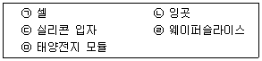
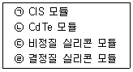
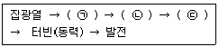
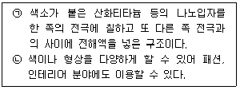

신재생에너지발전설비기능사 (2016-04-02 기출문제)
1과목: 임의구분
1. 다결정 실리콘 태양전지의 제조공정 순서를 바르게 나열한 것은?

- ㉢→㉣→㉡→㉠→㉤
- ㉢→㉡→㉣→㉠→㉤
- ㉡→㉢→㉠→㉣→㉤
- ㉡→㉢→㉣→㉠→㉤
(정답률: 81%)

2. 최대출력이 102W이고 동작전압이 34V인 태양전지 모듈을 사용하여 필요용량이 3kW이고 필요전압이 200V인 태양광 발전시스템을 구성하기 위한 모듈 수는 몇 개가 필요한가?
- 25
- 30
- 35
- 40
(정답률: 69%)
3. 태양광발전시스템은 옥외에 설치됨에 따라 낙뢰에 대한 대책이 필요하다. 다음 중 틀린 것은?
- 직격뢰에 대한 대책으로는 피뢰침을 설치해야 한다.
- 유도뢰는 정전유도에 의한 것과 전자유도에 의한 것이 있다.
- 여름뢰는 하강기류가 발생하기 쉬운 곳에서 발생하기 쉽다.
- 겨울뢰는 겨울에 기온이 급변할 때 발생하기 쉽다.
(정답률: 75%)
4. 태양전지 모듈의 곡선인자(충진율, FF)가 높은 순으로 배열 된 것은?

- ㉠→㉡→㉢→㉣
- ㉣→㉢→㉡→㉠
- ㉠→㉣→㉡→㉢
- ㉣→㉠→㉡→㉢
(정답률: 65%)
5. 태양광발전시스템 인버터 시스템 중 고전압 방식의 특징으로 틀린 것은?
- 전류가 크기 때문에 굵은 케이블을 사용한다.
- 인버터 고장 시 발전량 손실이 매우 크다.
- 스트링이 길어 음영손실이 높다.
- 전압 강하가 줄어든다.
(정답률: 64%)
6. 태양광 모듈의 크기가 가로 0.53m, 세로 1.19m이며, 최대출력 80W인 모듈의 에너지 변환효율은 약 몇% 인가? (단, 표준시험 조건일 때이다.)
- 15.68
- 14.25
- 13.65
- 12.68
(정답률: 67%)
7. 인버터 단독운전 방지기능 중 단독 운전시 주파수를 검출하는 방식이 아닌 것은?
- 부하변동방식
- 주파수 시프트방식
- 유효전력 변동방식
- 무효전력 변동방식
(정답률: 59%)
8. 태양광발전시스템에 적용하는 피뢰방식으로 틀린 것은?
- 돌침방식
- 수평도체방식
- 케이지방식
- 등전위본딩방식
(정답률: 67%)
9. 태양전지 모듈에 입사된 빛 에너지가 변환되어 발생하는 전기적 출력의 특성을 전류-전압특성이라고 한다. 이의 표시사항으로 틀린 것은?
- 단락전류
- 개방전압
- 최대출력동작전류
- 최소출력동작전압
(정답률: 54%)
10. 다음은 태양열발전시스템의 발전원리를 나타낸 것이다. ( ) 안의 공정으로 올바른 것은?

- ㉠ 열전달, ㉡ 증기발생, ㉢ 축열
- ㉠ 열전달 , ㉡ 축열, ㉢ 증기발생
- ㉠ 축열, ㉡ 열전달, ㉢ 증기발생
- ㉠ 증기발생, ㉡ 열전달, ㉢ 축열
(정답률: 68%)
11. 축전지 과충전 시 발생하는 현상이 아닌 것은?
- 축전지의 부식
- 가스 발생
- 전해액감소
- 침전물 발생
(정답률: 64%)
12. 인버터의 기능이 아닌 것은?
- 유효 및 무효전력 조정기능
- 유도뢰전류 파형 감쇠기능
- 전압 및 주파수 조정기능
- 최대출력 추종제어기능
(정답률: 65%)
13. 다음에서 설명하는 태양전지의 종류는?

- 유기 박막 태양전지
- 구형 실리콘 태양전지
- 갈륨 비소계 태양전지
- 염료 감응형 태양전지
(정답률: 82%)
14. 신ㆍ재생에너지 설비와 관계가 없는 것은?
- 태양에너지 설비
- 원자력발전 설비
- 바이오에너지 설비
- 폐기물에너지 설비
(정답률: 83%)
15. 지붕 설치형 방식 중 평지붕형에 대한 특징으로 틀린 것은?
- 아스팔트 방수, 시트 방수 등의 방수층 위에 철골 가대를 설치하고 모듈을 설치한다.
- 주로 공공기관이나 학교 등의 옥상에 설치하는 사례가 많다.
- 설치 공법으로서 각 모듈 제조회사의 표준 사양으로 되어 있다.
- 태양전지 모듈 자체가 지붕재로서의 기능을 보유하고 있는 타입이다.
(정답률: 70%)
16. 독립형 태양광발전시스템에서 축전지의 용량을 정할 때 고려해야 될 것으로 틀린 것은?
- 부하의 크기
- kWh당 가격
- 발전이 불가능한 연속 일 수
- 최대일사량 기준 일조 시간 수
(정답률: 73%)
17. 슈퍼 스트레이트형 태양전지 모듈을 구성하고 있는 구조 요소가 아닌 것은?
- 피뢰소자
- 프레임
- 프론트 커버
- 내부연결 전극
(정답률: 63%)
18. 태양전지 모듈 뒤편 명판에 기재되지 않는 사항은?
- 공칭최대출력
- 에너지변환효율
- 공칭최대출력 동작전압
- 제조년월일 및 제조번호
(정답률: 66%)
19. 태양광발전시스템의 접속함 내에 설치되지 않는 것은?
- 직류 출력 개폐기
- 피뢰소자
- 축전지
- 단자대
(정답률: 57%)
20. 주택용 독립형 태양광발전시스템의 주요 구성 요소가 아닌 것은?
- 배전시스템
- 축전지
- 태양전지모듈
- 충방전 제어기
(정답률: 69%)
2과목: 임의구분
21. 태양전지 모듈의 배선작업 완료 후 시행하는 검사항목이 아닌 것은?
- 일사량 측정
- 비접지 확인
- 단락전류 측정
- 전압ㆍ극성 확인
(정답률: 71%)
22. 태양전지 모듈 설치 시 감전방지 대책에서 틀린 것은?
- 저압절연 장갑을 착용한다.
- 절연 처리된 공구를 사용한다.
- 강우시에는 태양광이 없기 때문에 작업을 해도 괜찮다.
- 작업전 태양전지 모듈의 표면에 차광시트를 붙여 태양광을 차폐한다.
(정답률: 85%)
23. 인버터를 설치하기 위한 적합한 장소가 아닌 것은?
- 통풍이 잘되는 장소
- 보수, 점검이 쉬운 장소
- 결로의 우려가 없는 장소
- 분진이 많고 냉각이 용이한 장소
(정답률: 85%)
24. 케이블트레이 시공방식의 장점이 아닌 것은?
- 방열특성이 좋다.
- 허용전류가 크다.
- 장래부하 증설시 대응력이 좋다.
- 재해의 영향을 거의 받지 않는다.
(정답률: 71%)
25. 태양광발전시스템에서 옥외 배선용으로 사용되는 전선은?
- UTP 케이블
- STP 케이블
- UV 케이블
- FCVV-SB 케이블
(정답률: 77%)
26. 제3종 접지공사를 생략할 수 있는 경우로 적합하지 않는 것은?
- 철대 또는 외함의 주위에 적당한 절연대를 설치하는 경우
- 외함이 없는 계기용변성기를 고무ㆍ합성수지 기타의 절연물로 피복한 경우
- 사용 전압이 직류 150V 또는 교류 대지전압이 300V 이하인 기계ㆍ기구를 습한 장소에 시설하는 경우
- 저압용의 기계ㆍ기구를 건조한 목재의 마루, 기타 이와 유사한 절연성 물건 위에서 취급하도록 시설하는 경우
(정답률: 74%)
27. 강우 시 태양전지 모듈 표면으로 흙탕물이 튀는 것을 방지하기 위해서 지면으로부터 몇 m 이상의 높이에 설치하는가?
- 0.4
- 0.6
- 0.8
- 1.0
(정답률: 67%)
28. 부하를 연결하지 않은 상태에서 태양전지가 발전할 때 단자 양단에 걸리는 전압은?
- 개방전압
- 단락전압
- 정격전압
- 부하전압
(정답률: 68%)
29. 태양전지 가대의 녹방지를 위하여 비교적 저렴하고 장기적 사용이 가능한 방법은?
- 불소계 도장
- 용융아연도금
- 에폭시계 도장
- 폴리우레탄계 도장
(정답률: 73%)
30. 태양광발전시스템의 접속함 설치 시공 시 확인하여야 할 사항이 아닌 것은?
- 설치장소가 설계도면과 일치하는 지를 확인한다.
- 설계의 적정성과 제조사가 건전한 회사인지를 확인한다
- 유지관리의 편리성을 고려한 설치방법인지를 확인한다.
- 접속함의 사양과 실제 설치한 접속함이 일치하는지를 확인한다.
(정답률: 79%)
31. 태양전지 어레이 육안점검 항목이 아닌 것은?
- 파손유무
- 개방전압
- 부식 및 녹이 없을 것
- 볼트 및 너트의 풀림이 없을 것
(정답률: 85%)
32. 태양전지 회로의 절연저항은 기온과 습도에 영향을 받는다. 절연저항계 이외에 필요한 계기가 아닌 것은?
- 온도계
- 습도계
- 항온항습기
- 단락용개폐기
(정답률: 62%)
33. 정기점검에서 접속함의 절연저항 측정 시 출력단자와 접지간의 절연저항은? (단, 측정전압은 직류 500V 이다. )
- 10Ω 이상
- 100Ω 이상
- 0.2MΩ 이상
- 1MΩ 이상
(정답률: 66%)
34. 중대형 태양광발전용 인버터의 절연성능 시험 항목이 아닌 것은?
- 내전압 시험
- 절연저항 시험
- 단락전류 시험
- 감전보호 시험
(정답률: 40%)
35. 유지보수 시 전로에 시설하는 기계기구 철대 및 금속제 외함의 접지공사 중 옳은 것은?
- 400V 이상의 저압용 : 제3종 접지공사
- 300V 이하의 저압용 : 제2종 접지공사
- 고압용 또는 특고압용 : 제1종 접지공사
- 400V 미만의 저압용 : 특별 제3종 접지공사
(정답률: 62%)
36. 인버터의 육안점검 항목이 아닌 것은?
- 통풍 확인
- 축전지 변색
- 외부배선의 손상
- 외함의 부식 및 파손
(정답률: 62%)
37. 중대형 태양광발전용 인버터의 누설전류시험을 할 때 인버터의 외함과 대지와의 사이에 저항을 접속해서 누설 전류가 5mA 이하이면 정상으로 본다. 이 때 접속하는 저항 값은 몇 Ω 인가?
- 100
- 500
- 1000
- 2000
(정답률: 54%)
38. 태양광발전시스템 운영방법 중 태양전지 모듈의 운영 방법에 관한 설명으로 틀린 것은?
- 황사나 먼지 및 공해물질은 발전량 감소의 주요인으로 작용한다.
- 모듈 표면은 특수 처리된 강화유리로 되어 있어 강한 충격이 있을 시 파손될 수 있다.
- 모듈 표면에 그늘이 지거나 나뭇잎 등이 떨어져 있는 경우 전체적인 발전효율은 변화가 없다.
- 풍압이나 진동으로 인하여 모듈과 형강의 체결 부위가 느슨해지는 경우가 있으므로 정기적으로 점검해야 한다
(정답률: 79%)
39. 운전상태에 따를 시스템의 발생신호 중 태양전지로부터 전력을 공급받아 인버터가 계통전압과 동기로 운전하며 계통과 부하에 전력을 공급하고 있는 상태는 어떤 상태인가?
- 정상운전
- 인버터 이상 시 운전
- 태양전지 전압 이상 시 운전
- 상용전원 전압 이상 시 운전
(정답률: 68%)
40. 인버터 이상신호 조치방법 중 태양전지의 전압 이상으로 전압 점검 후 정상이 되면 몇 분 후에 재기동하여야 하는가?
- 5분
- 7분
- 9분
- 10분
(정답률: 74%)
3과목: 임의구분
41. 유지관리비의 구성요소로 틀린 것은?
- 유지비
- 보수비
- 개량비
- 건설비
(정답률: 77%)
42. 태양광발전 설비의 변압기 보수 정기점검 개소로 틀린 것은?
- 유면계
- 온도계
- 기록계
- 가스압력계
(정답률: 55%)
43. 태양광발전시스템의 계측기나 표시장치의 구성요소가 아닌 것은?
- 연산장치
- 차단장치
- 표시장치
- 신호변환기
(정답률: 53%)
44. 정전작업 전 조치사항으로 틀린 것은?
- 단락접지기구로 단락접지
- 개폐기 투입으로 송전 재개
- 검전기로 개로된 전로의 충전 여부 확인
- 전력 테이블, 전력 콘덴서 등의 잔류전하의 방전
(정답률: 69%)
45. 점검 계획의 수립에 있어서 고려해야 할 사항이 아닌 것은?
- 환경조건
- 설비의 중요도
- 정상 가동시간
- 설비의 사용기간
(정답률: 52%)
46. 태양광발전 시설에 대한 점검 후의 유의사항 중 최종 작업자가 최종 확인하는 사항으로 틀린 것은?
- 회로도에 의한 검토를 시행한다.
- 볼트 조임 작업을 모두 재점검 한다.
- 쥐, 곤충 등이 침입하지 않았는지 확인한다.
- 점검을 위해 임시로 설치한 설치물의 철거가 지연되고 있지 않았는지 확인한다.
(정답률: 66%)
47. 정기 점검 시 접속함의 육안점검 사항이 아닌 것은?
- 개방전압
- 외함의 부식 및 파손
- 접지선의 손상 및 접지단자의 풀림
- 외부 배선의 손상 및 접속단자의 풀림
(정답률: 83%)
48. 절연변압기 부착형 인버터 출력회로의 경우 절연저항 측정 방법으로 틀린 것은?
- 분전반내의 분기차단기를 개방한다.
- 태양전지 회로를 접속함에서 분리한다.
- 직류단자와 대지 간의 절연저항을 측정한다.
- 직류측의 모든 입력단자 및 교류측의 전체 출력단자를 각각 단락한다.
(정답률: 43%)
49. 태양광발전설비 정기점검 작업자의 안전장구로 적합하지 않는 것은?
- 안전모
- 안전화
- 검전기
- 귀마개
(정답률: 83%)
50. 태양광발전시스템의 운전 및 정지에 대한 점검항목이 아닌 것은?
- 자립운전
- 스위치 오염상태
- 표시부의 동작확인
- 투입저지 시한 타이머 동작시험
(정답률: 65%)
51. 저압보안공사 시 지지물 종류의 경간으로 옳은 것은?
- 목주 200m 이하
- 철탑 400m 이하
- B종 철주 또는 B종 철근 콘크리트주 250m 이하
- A종 철주 또는 A종 철근 콘크리트주 150m 이하
(정답률: 60%)
52. 신ㆍ재생에너지의 가중치 고려사항으로 틀린 것은?
- 발전량
- 발전원가
- 온실가스 배출 저감에 미치는 효과
- 환경, 기술개발 및 산업 활성화에 미치는 영향
(정답률: 41%)
53. 전력용 반도체소자의 스위칭 작용을 이용하여 직류전력을 교류전력으로 변환하는 장치는?
- 변성기
- 변압기
- 인버터
- 정류기
(정답률: 81%)
54. 태양전지 발전소에 시설하는 태양전지 모듈, 전선 및 개폐기 기타 기구의 시설기준으로 틀린 것은?
- 충전부분은 노출되지 아니하도록 시설할 것
- 전선은 합성수지관공사, 금속관공사, 가요전선관공사 또는 케이블공사로 시설할 것
- 전선은 공칭단면적 1.5mm2 이상의 연동선 또는 이와 동등 이상의 세기 및 굵기의 것일 것
- 태양전지 모듈에 접속하는 부하측의 전로에는 그 접속점에 근접하여 개폐기 기타 이와 유사한 기구를 시설할 것
(정답률: 69%)
55. 주택의 태양전지 모듈에 접속하는 부하측 옥내 배선을 전로에 지락이 생겼을 때 자동적으로 전로를 차단하는 장치를 시설할 경우 주택의 옥내전로의 대지전압은 직류 몇 V 이하이어야 하는가?
- 200
- 400
- 600
- 800
(정답률: 52%)
56. 신ㆍ재생에너지라 할 수 없는 것은?
- 태양에너지
- 석유에너지
- 해양에너지
- 지열에너지
(정답률: 83%)
57. 저압 옥내간선에서 분기한 옥내전로는 특별한 조건이 없을 때 간선과의 분기점에서 몇 m 이하인 곳에 개폐기 및 과전류차단기를 시설하여야 하는가?
- 3
- 5
- 7
- 9
(정답률: 61%)
58. 신ㆍ재생에너지 개발ㆍ이용ㆍ보급 촉진법에서 연차별 실행계획 수립에 해당 되지 않는 것은?
- 신ㆍ재생에너지의 기술개발 및 이용ㆍ보급을 매년 수립ㆍ시행한다.
- 산업통상자원부장관은 실행계획을 수립하였을 때에는 이를 공고하여야 한다.
- 산업통상자원부장관은 관계 중앙행정기관의 장과 협의 하여 수립ㆍ시행하여야 한다.
- 신ㆍ재생에너지 발전에 의한 전기의 공급에 관한 실행 계획을 2년마다 수립ㆍ시행 한다.
(정답률: 71%)
59. 태양전지 모듈 가대에 실시하는 제3종 접지공사의 접지선을 지하 75cm부터 지표상 2m 까지 보호하는데 사용 가능한 전선관은? (단, 두께 2mm 미만 및 난연성이 없는 것은 제외한다.)
- 금속전선관
- 금속가요관
- 콤바인덕트관
- 합성수지관
(정답률: 65%)
60. 신축ㆍ증축 또는 개축하는 건축물로써 신ㆍ재생에너지 공급의무 비율에 해당하는 최소 연면적(m2)은?
- 500
- 1000
- 1500
- 2000
(정답률: 71%)
㉢: 실리콘 원료를 정제하여 다결정 실리콘 블록을 만드는 공정
㉡: 다결정 실리콘 블록을 잘라서 원판 모양으로 만드는 공정
㉣: 원판 모양으로 만든 다결정 실리콘을 광학적으로 검사하여 결함이 있는 부분을 제거하는 공정
㉠: 다결정 실리콘 원판에 알루미늄과 실버를 증착하여 전극을 만드는 공정
㉤: 전극을 연결하고 보호하기 위해 유리와 에폭시 수지를 적층하여 완성하는 공정
따라서, ㉢→㉡→㉣→㉠→㉤ 순서로 공정을 진행해야 합니다.